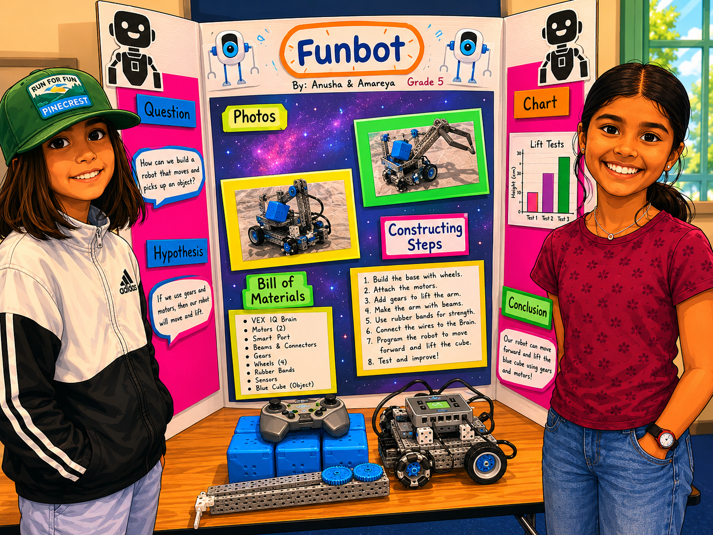
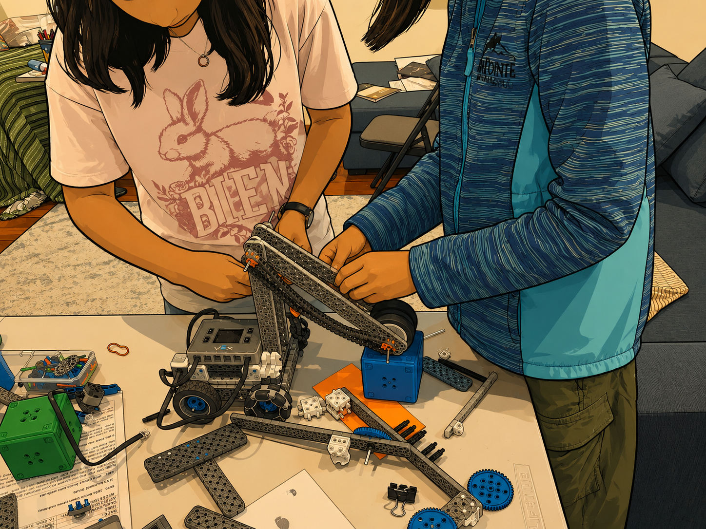
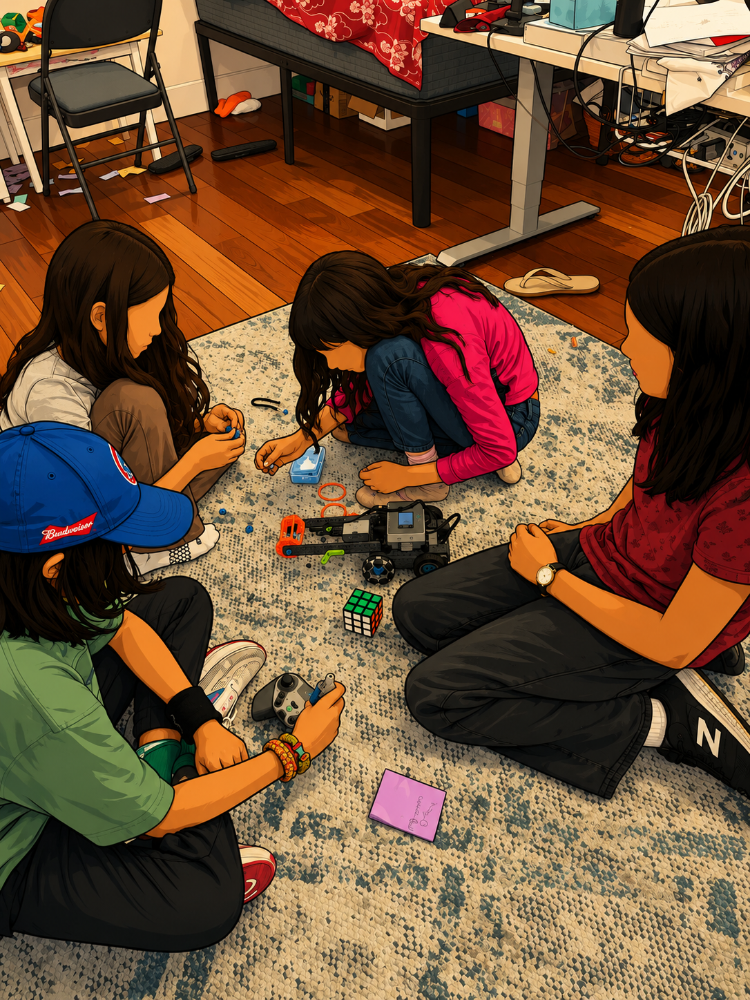
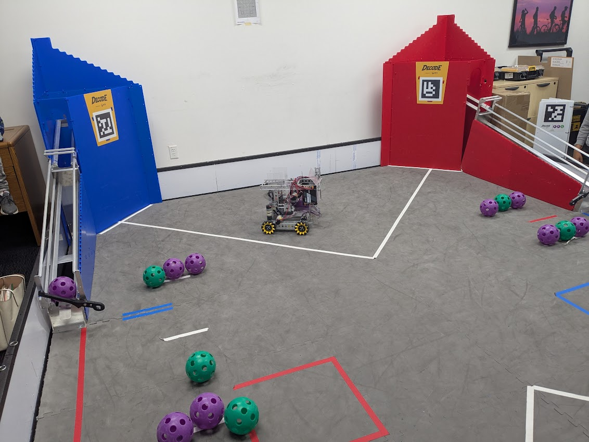
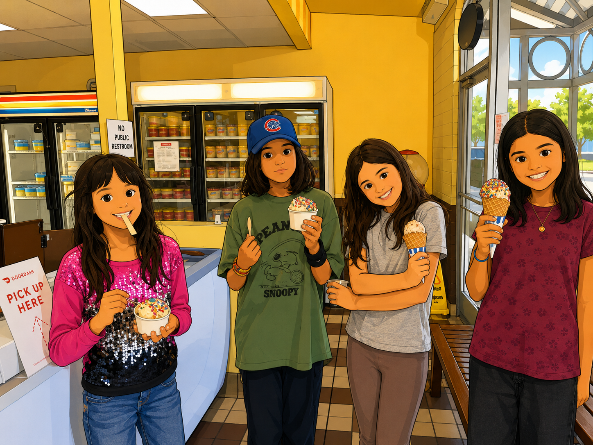
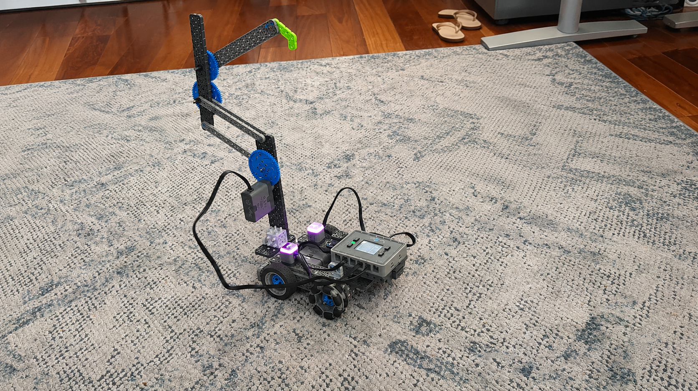
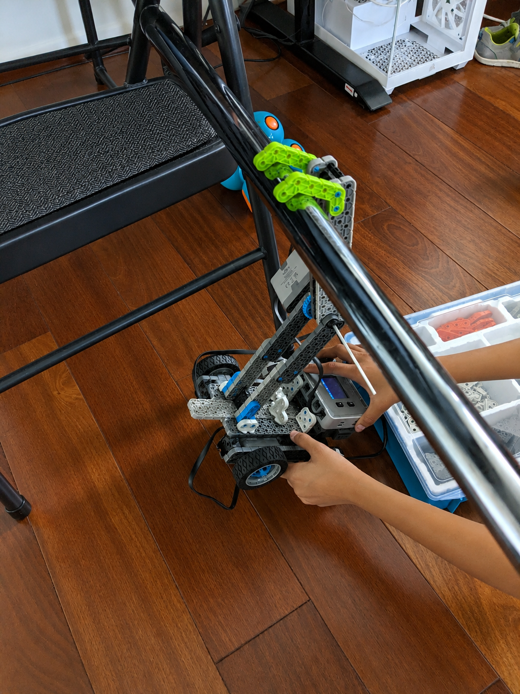

Fairmeadow Robotics Newsletter #3
An update from our friendly neighborhood Fairmeadow Robotics Team.
By Manisha Verma · May 26, 2026
Building Continued
The last few months have been some of the most exciting yet for our Fairmeadow Robotics team. The girls have steadily transitioned from learning foundational robotic builds to experimenting with more advanced mechanisms inspired by VEX robotics.
This phase focused heavily on one of the most important concepts in robotics competitions: intake mechanisms — how a robot efficiently collects and manipulates game objects. Along the way, the girls also got their first taste of the world of competitive robotics.
🌟 Science Fair Showcase
One of the highlights of the spring was seeing Team FunBot present at the school Science Fair. The team set up their robot, demonstrated their ideas, and explained their engineering process to visitors and fellow students.

🛠️ Intake Mechanisms: Learning From VEX IQ Robotics
This cycle’s project-based learning centered around designing and building robot intake systems, inspired by VEX IQ robotics design tutorials.
The girls explored two different intake approaches.
🎈 Balloon Tyre Intake
Inspired by online VEX designs, the team experimented with balloon tyres and rollers to create a flexible intake capable of grabbing and pulling game objects inward.
The design taught important concepts such as:
- Friction and traction
- Roller spacing
- Compression
- Speed versus control
The girls quickly discovered that even tiny changes in spacing or wheel alignment could dramatically change how well the intake worked.

🔄 Rubber Band Intake
The second mechanism used rubber bands to create a conveyor-style intake system.
This project introduced:
- Motion transfer
- Tension balancing
- Object flow through the robot
- Stability and alignment
The teams worked on these designs over multiple sessions, iterating and improving them each week — exactly how real robotics engineers operate.

🏁 A Glimpse Into Competitive Robotics
To help the girls better understand where these concepts are used in the real world, we organized a visit to the Owl Academy Introduction to Competitive Robotics event.
The visit gave the girls their first real flavor of competitive robotics:
- Watching advanced robots in action
- Seeing how teams collaborate under pressure
- Understanding strategy and game play
- Experiencing the excitement and energy of robotics competitions
The event helped connect many of the ideas we’ve been learning in class to actual competition scenarios and assess the uplift needed to engage in more advanced robotics.

🍦 Celebrating the Milestones
After successfully completing both intake designs, the team celebrated with a well-earned trip to Rick’s Ice Cream.

The celebration was a fun reminder that robotics is not only about solving difficult problems — it’s also about enjoying the journey together as a team.
🚀 Final Challenges Before Summer
Before breaking for the summer, the girls took on two ambitious advanced builds inspired directly by competitive VEX robotics mechanisms.
🦷 ChewBot / DR4B Lift
The team built a robot featuring a Double Reverse Four Bar (DR4B) lift mechanism — one of the classic advanced lift systems used in competitive robotics.
This mechanism introduces:
- Linked motion systems
- Stability challenges
- Weight balancing
- Precision lifting
The girls are beginning to understand how to combine multiple coordinated subsystems into a single design. We also conducted a demo exploring the ChewBot’s interconnected levers, chewing motion controls, and how its design could be improved.

🐒 Monkey Bar Bot
The second advanced project is a “Monkey Bar” robot capable of climbing hanging bars.
This build introduces:
- Structural rigidity
- Hook mechanisms
- Weight distribution
- Controlled motion under load

Both projects are now demoable and represent a leap forward from where the team started just a few months ago.
💡 What the Girls Are Really Learning
While the robots continue getting tweaked and more advanced, the deeper learning happening underneath is even more exciting.
The girls are learning:
- How to think like engineers
- How to iterate through failure
- How to collaborate as a team
- How to explain and defend their ideas
“Engineering is not about building the perfect robot the first time. It’s about building, testing, failing, improving, and trying again.”
— Manisha’s Gemini-aided quote of the month
🙌 Thank You
Thank you to all the families for continuing to support this journey. It has been incredibly rewarding to watch the girls grow with each other as a team and as tinkerers and collaborators.
We’re excited to welcome them back in the new school year and see what they build in the second half of this year!